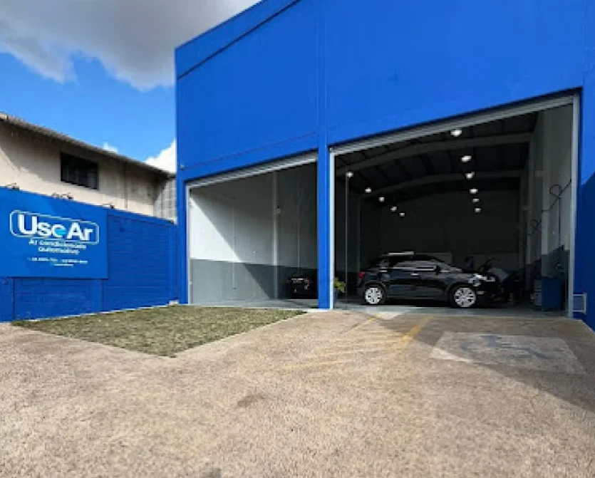
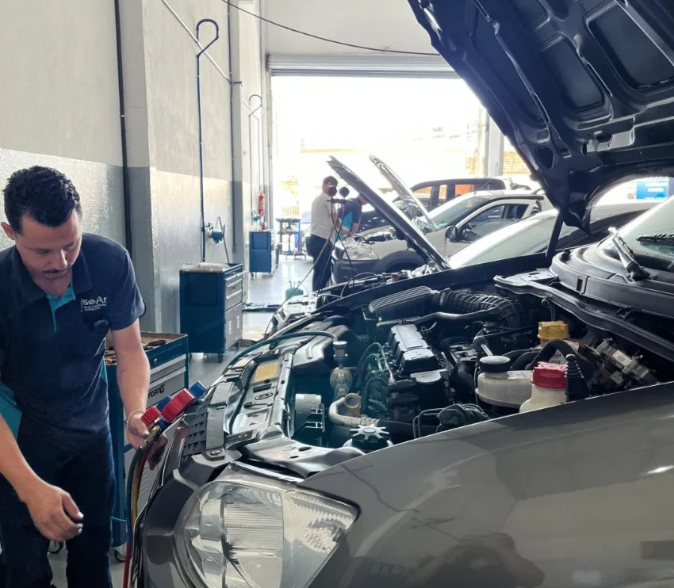

Diagnóstico completo
Testes de eficiência, pressão, temperatura, vazamentos e componentes elétricos antes da execução do serviço.
Um espaço preparado para receber veículos leves, utilitários e pesados, com equipamentos profissionais, diagnóstico preciso e uma equipe especializada em climatização automotiva.


A oficina fixa permite avaliações detalhadas, desmontagens técnicas e reparos completos com organização, segurança e os equipamentos adequados para cada etapa.
Testes de eficiência, pressão, temperatura, vazamentos e componentes elétricos antes da execução do serviço.
Estrutura para manutenção preventiva, corretiva, recargas e reparos em sistemas de climatização automotiva.
Procedimentos técnicos organizados, peças adequadas e cuidado em todas as etapas do atendimento.
A equipe explica o diagnóstico, apresenta a solução indicada e mantém você informado sobre o serviço.
O objetivo é encontrar a causa do problema e devolver o veículo com o sistema funcionando de forma eficiente, sem trocas desnecessárias.
Ver todos os serviçosEntendemos os sintomas e realizamos a inspeção inicial do veículo.
Testamos o sistema e identificamos a origem real da falha.
Explicamos o serviço indicado antes de iniciar qualquer reparo.
Concluímos o trabalho e validamos o desempenho do ar-condicionado.
Conheça a oficina móvel para atendimentos em empresas, transportadoras, fazendas, frotas e locais onde o veículo não pode parar.
Fale com a equipe, conte o que está acontecendo e reserve o melhor horário para o seu veículo.
Falar com a UseAr